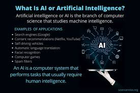

artificial intelligence (AI) By Ed BurnsNicole Laskowski, Senior News DirectorLinda Tucci, Industry Editor -- CIO/IT Strategy What is artificial intelligence (AI)? Artificial intelligence is the simulation of human intelligence processes by machines, especially computer systems. Specific applications of AI include expert systems, natural language processing, speech recognition and machine vision. How does AI work? As the hype around AI has accelerated, vendors have been scrambling to promote how their products and services use it. Often, what they refer to as AI is simply a component of the technology, such as machine learning. AI requires a foundation of specialized hardware and software for writing and training machine learning algorithms. No single programming language is synonymous with AI, but Python, R, Java, C++ and Julia have features popular with AI developers. In general, AI systems work by ingesting large amounts of labeled training data, analyzing the data for correlations and patterns, and using these patterns to make predictions about future states. In this way, a chatbot that is fed examples of text can learn to generate lifelike exchanges with people, or an image recognition tool can learn to identify and describe objects in images by reviewing millions of examples. New, rapidly improving generative AI techniques can create realistic text, images, music and other media.
Artificial intelligence (AI) is intelligence demonstrated by computers, as opposed to human or animal intelligence. "Intelligence" encompasses the ability to learn and to reason, to generalize, and to infer meaning.[1][2] AI applications include advanced web search engines (e.g., Google Search), recommendation systems (used by YouTube, Amazon, and Netflix), understanding human speech (such as Siri and Alexa), self-driving cars (e.g., Waymo), generative or creative tools (ChatGPT and AI art), automated decision-making, and competing at the highest level in strategic game systems (such as chess and Go).[3] Artificial intelligence was founded as an academic discipline in 1956, and in the years since it has experienced several waves of optimism,[4][5] followed by disappointment and the loss of funding (known as an "AI winter"),[6][7] followed by new approaches, success, and renewed funding.[5][8] AI research has tried and discarded many different approaches, including simulating the brain, modeling human problem solving, formal logic, large databases of knowledge, and imitating animal behavior. In the first decades of the 21st century, highly mathematical and statistical machine learning has dominated the field, and this technique has proved highly successful, helping to solve many challenging problems throughout industry and academia.[8][9] The various sub-fields of AI research are centered around particular goals and the use of particular tools. The traditional goals of AI research include reasoning, knowledge representation, planning, learning, natural language processing, perception, and the ability to move and manipulate objects.[a] General intelligence (the ability to solve an arbitrary problem) is among the field's long-term goals.[10][2] To solve these problems, AI researchers have adapted and integrated a wide range of problem-solving techniques, including search and mathematical optimization, formal logic, artificial neural networks, and methods based on statistics, probability, and economics. AI also draws upon computer science, psychology, linguistics, philosophy, and many other fields. The field was founded on the assumption that human intelligence "can be so precisely described that a machine can be made to simulate it".[b] This raised philosophical arguments about the mind and the ethical consequences of creating artificial beings endowed with human-like intelligence; these issues have previously been explored by myth, fiction (science fiction), and philosophy since antiquity.[12] Computer scientists and philosophers have since suggested that AI may become an existential risk to humanity if its rational capacities are not steered towards goals beneficial to humankind.[c] Economists have frequently highlighted the risks of redundancies from AI, and speculated about unemployment if there is no adequate social policy for full employment.[13] The term artificial intelligence has also been criticized for overhyping AI's true technological capabilities.[14][15][16] History Main articles: History of artificial intelligence and Timeline of artificial intelligence Silver didrachma from Crete depicting Talos, a mythical intelligent automaton (c. 300 BC) Artificial beings with intelligence appeared as storytelling devices in antiquity,[17] and have been common in fiction, as in Mary Shelley's Frankenstein or Karel Čapek's R.U.R.[18] These characters and their fates raised many of the same issues now discussed in the ethics of artificial intelligence.[19] The study of mechanical or "formal" reasoning began with philosophers and mathematicians in antiquity. The study of mathematical logic led directly to Alan Turing's theory of computation, which suggested that a machine, by shuffling symbols as simple as "0" and "1", could simulate any conceivable act of mathematical deduction. This insight that digital computers can simulate any process of formal reasoning is known as the Church–Turing thesis.[20] This, along with concurrent discoveries in neurobiology, information theory and cybernetics, led researchers to consider the possibility of building an electronic brain.[21] The first work that is now generally recognized as AI was McCullouch and Pitts' 1943 formal design for Turing-complete "artificial neurons".[22] The field of AI research was born at a workshop at Dartmouth College in 1956.[d][25] The attendees became the founders and leaders of AI research.[e] They and their students produced programs that the press described as "astonishing":[f] computers were learning checkers strategies, solving word problems in algebra, proving logical theorems and speaking English.[g][27] By the middle of the 1960s, research in the U.S. was heavily funded by the Department of Defense[28] and laboratories had been established around the world.[29] Researchers in the 1960s and the 1970s were convinced that their methods would eventually succeed in creating a machine with artificial general intelligence and considered this the goal of their field.[30] Herbert Simon predicted, "machines will be capable, within twenty years, of doing any work a man can do".[31] Marvin Minsky agreed, writing, "within a generation ... the problem of creating 'artificial intelligence' will substantially be solved".[32] They had failed to recognize the difficulty of some of the remaining tasks. Progress slowed and in 1974, in response to the criticism of Sir James Lighthill[33] and ongoing pressure from the US Congress to fund more productive projects, both the U.S. and British governments cut off exploratory research in AI. The next few years would later be called an "AI winter", a period when obtaining funding for AI projects was difficult.[6] In the early 1980s, AI research was revived by the commercial success of expert systems,[34] a form of AI program that simulated the knowledge and analytical skills of human experts. By 1985, the market for AI had reached over a billion dollars. At the same time, Japan's fifth generation computer project inspired the U.S. and British governments to restore funding for academic research.[5] However, beginning with the collapse of the Lisp Machine market in 1987, AI once again fell into disrepute, and a second, longer-lasting winter began.[7] Many researchers began to doubt that the current practices would be able to imitate all the processes of human cognition, especially perception, robotics, learning and pattern recognition. A number of researchers began to look into "sub-symbolic" approaches to specific AI problems.[35] Robotics researchers, such as Rodney Brooks, rejected symbolic AI and focused on the basic engineering problems that would allow robots to move, survive, and learn their environment.[h] Interest in neural networks and "connectionism" was revived by Geoffrey Hinton, David Rumelhart and others in the middle of the 1980s.[40] Soft computing tools were developed in the 1980s, such as neural networks, fuzzy systems, Grey system theory, evolutionary computation and many tools drawn from statistics or mathematical optimization. AI gradually restored its reputation in the late 1990s and early 21st century by exploiting formal mathematical methods and by finding specific solutions to specific problems. This "narrow" and "formal" focus allowed researchers to produce verifiable results and collaborate with other fields (such as statistics, economics and mathematics).[41] By 2000, solutions developed by AI researchers were being widely used, although in the 1990s they were rarely described as "artificial intelligence".[9] Faster computers[42] and access to large amounts of data[43] enabled advances in machine learning and perception; data-hungry deep learning methods started to dominate accuracy benchmarks around 2012.[44] According to Bloomberg's Jack Clark, 2015 was a landmark year for artificial intelligence, with the number of software projects that use AI within Google increased from a "sporadic usage" in 2012 to more than 2,700 projects.[i] He attributed this to an increase in affordable neural networks, due to a rise in cloud computing infrastructure and to an increase in research tools and datasets.[8] In a 2017 survey, one in five companies reported they had "incorporated AI in some offerings or processes".[45] The amount of research into AI (measured by total publications) increased by 50% in the years 2015–2019.[46] According to AI Impacts at Stanford, around 2022 about $50 billion annually is invested in artificial intelligence in the US, and about 20% of new US Computer Science PhD graduates have specialized in artificial intelligence;[47] about 800,000 AI-related US job openings existed in 2022.[48] Numerous academic researchers became concerned that AI was no longer pursuing the original goal of creating versatile, fully intelligent machines. Much of current research involves statistical AI, which is overwhelmingly used to solve specific problems, even highly successful techniques such as deep learning. This concern has led to the subfield of artificial general intelligence (or "AGI"),[2] which had several well-funded institutions by the 2010s.[10] Goals The general problem of simulating (or creating) intelligence has been broken down into sub-problems. These consist of particular traits or capabilities that researchers expect an intelligent system to display. The traits described below have received the most attention.[a] Reasoning, problem-solving Early researchers developed algorithms that imitated step-by-step reasoning that humans use when they solve puzzles or make logical deductions.[49] By the late 1980s and 1990s, AI research had developed methods for dealing with uncertain or incomplete information, employing concepts from probability and economics.[50] Many of these algorithms proved to be insufficient for solving large reasoning problems because they experienced a "combinatorial explosion": they became exponentially slower as the problems grew larger.[51] Even humans rarely use the step-by-step deduction that early AI research could model. They solve most of their problems using fast, intuitive judgments.[52] Knowledge representation Main articles: Knowledge representation, Commonsense knowledge, Description logic, and Ontology (information science) An ontology represents knowledge as a set of concepts within a domain and the relationships between those concepts. Knowledge representation and knowledge engineering[53] allow AI programs to answer questions intelligently and make deductions about real-world facts. A representation of "what exists" is an ontology: the set of objects, relations, concepts, and properties formally described so that software agents can interpret them.[54] The most general ontologies are called upper ontologies, which attempt to provide a foundation for all other knowledge and act as mediators between domain ontologies that cover specific knowledge about a particular knowledge domain (field of interest or area of concern). A truly intelligent program would also need access to commonsense knowledge, the set of facts that an average person knows. The semantics of an ontology is typically represented in description logic, such as the Web Ontology Language.[55] AI research has developed tools to represent specific domains, such as objects, properties, categories and relations between objects;[55] situations, events, states and time;[56] causes and effects;[57] knowledge about knowledge (what we know about what other people know); and [58] default reasoning (things that humans assume are true until they are told differently and will remain true even when other facts are changing);[59]. Among the most difficult problems in AI are: the breadth of commonsense knowledge (the number of atomic facts that the average person knows is enormous);[60] and the sub-symbolic form of most commonsense knowledge (much of what people know is not represented as "facts" or "statements" that they could express verbally).[52] Formal knowledge representations are used in content-based indexing and retrieval,[61] scene interpretation,[62] clinical decision support,[63] knowledge discovery (mining "interesting" and actionable inferences from large databases),[64] and other areas.[65] Learning Main article: Machine learning Machine learning (ML), a fundamental concept of AI research since the field's inception,[j] is the study of computer algorithms that improve automatically through experience.[k] Unsupervised learning finds patterns in a stream of input. Supervised learning requires a human to label the input data first, and comes in two main varieties: classification and numerical regression. Classification is used to determine what category something belongs in – the program sees a number of examples of things from several categories and will learn to classify new inputs. Regression is the attempt to produce a function that describes the relationship between inputs and outputs and predicts how the outputs should change as the inputs change. Both classifiers and regression learners can be viewed as "function approximators" trying to learn an unknown (possibly implicit) function; for example, a spam classifier can be viewed as learning a function that maps from the text of an email to one of two categories, "spam" or "not spam".[69] In reinforcement learning the agent is rewarded for good responses and punished for bad ones. The agent classifies its responses to form a strategy for operating in its problem space.[70] Transfer learning is when the knowledge gained from one problem is applied to a new problem.[71] Computational learning theory can assess learners by computational complexity, by sample complexity (how much data is required), or by other notions of optimization.[72] Natural language processing Main article: Natural language processing A parse tree represents the syntactic structure of a sentence according to some formal grammar. Natural language processing (NLP)[73] allows machines to read and understand human language. A sufficiently powerful natural language processing system would enable natural-language user interfaces and the acquisition of knowledge directly from human-written sources, such as newswire texts. Some straightforward applications of NLP include information retrieval, question answering and machine translation.[74] Symbolic AI used formal syntax to translate the deep structure of sentences into logic. This failed to produce useful applications, due to the intractability of logic[51] and the breadth of commonsense knowledge.[60] Modern statistical techniques include co-occurrence frequencies (how often one word appears near another), "Keyword spotting" (searching for a particular word to retrieve information), transformer-based deep learning (which finds patterns in text), and others.[75] They have achieved acceptable accuracy at the page or paragraph level, and, by 2019, could generate coherent text.[76] Perception Main articles: Machine perception, Computer vision, and Speech recognition Feature detection (pictured: edge detection) helps AI compose informative abstract structures out of raw data. Machine perception[77] is the ability to use input from sensors (such as cameras, microphones, wireless signals, and active lidar, sonar, radar, and tactile sensors) to deduce aspects of the world. Applications include speech recognition,[78] facial recognition, and object recognition.[79] Computer vision is the ability to analyze visual input.[80] Social intelligence Main article: Affective computing Kismet, a robot with rudimentary social skills[81] Affective computing is an interdisciplinary umbrella that comprises systems that recognize, interpret, process or simulate human feeling, emotion and mood.[82] For example, some virtual assistants are programmed to speak conversationally or even to banter humorously; it makes them appear more sensitive to the emotional dynamics of human interaction, or to otherwise facilitate human–computer interaction. However, this tends to give naïve users an unrealistic conception of how intelligent existing computer agents actually are.[83] Moderate successes related to affective computing include textual sentiment analysis and, more recently, multimodal sentiment analysis, wherein AI classifies the affects displayed by a videotaped subject.[84] General intelligence Main article: Artificial general intelligence A machine with general intelligence can solve a wide variety of problems with breadth and versatility similar to human intelligence. There are several competing ideas about how to develop artificial general intelligence. Hans Moravec and Marvin Minsky argue that work in different individual domains can be incorporated into an advanced multi-agent system or cognitive architecture with general intelligence.[85] Pedro Domingos hopes that there is a conceptually straightforward, but mathematically difficult, "master algorithm" that could lead to AGI.[86] Others believe that anthropomorphic features like an artificial brain[87] or simulated child development[l] will someday reach a critical point where general intelligence emerges. Tools Search and optimization Main articles: Search algorithm, Mathematical optimization, and Evolutionary computation AI can solve many problems by intelligently searching through many possible solutions.[88] Reasoning can be reduced to performing a search. For example, logical proof can be viewed as searching for a path that leads from premises to conclusions, where each step is the application of an inference rule.[89] Planning algorithms search through trees of goals and subgoals, attempting to find a path to a target goal, a process called means-ends analysis.[90] Robotics algorithms for moving limbs and grasping objects use local searches in configuration space.[91] Simple exhaustive searches[92] are rarely sufficient for most real-world problems: the search space (the number of places to search) quickly grows to astronomical numbers. The result is a search that is too slow or never completes. The solution, for many problems, is to use "heuristics" or "rules of thumb" that prioritize choices in favor of those more likely to reach a goal and to do so in a shorter number of steps. In some search methodologies, heuristics can also serve to eliminate some choices unlikely to lead to a goal (called "pruning the search tree"). Heuristics supply the program with a "best guess" for the path on which the solution lies.[93] Heuristics limit the search for solutions into a smaller sample size.[94] A particle swarm seeking the global minimum A very different kind of search came to prominence in the 1990s, based on the mathematical theory of optimization. For many problems, it is possible to begin the search with some form of a guess and then refine the guess incrementally until no more refinements can be made. These algorithms can be visualized as blind hill climbing: we begin the search at a random point on the landscape, and then, by jumps or steps, we keep moving our guess uphill, until we reach the top. Other related optimization algorithms include random optimization, beam search and metaheuristics like simulated annealing.[95] Evolutionary computation uses a form of optimization search. For example, they may begin with a population of organisms (the guesses) and then allow them to mutate and recombine, selecting only the fittest to survive each generation (refining the guesses). Classic evolutionary algorithms include genetic algorithms, gene expression programming, and genetic programming.[96] Alternatively, distributed search processes can coordinate via swarm intelligence algorithms. Two popular swarm algorithms used in search are particle swarm optimization (inspired by bird flocking) and ant colony optimization (inspired by ant trails).[97] Logic Main articles: Logic programming and Automated reasoning Logic[98] is used for knowledge representation and problem-solving, but it can be applied to other problems as well. For example, the satplan algorithm uses logic for planning[99] and inductive logic programming is a method for learning.[100] Several different forms of logic are used in AI research. Propositional logic[101] involves truth functions such as "or" and "not". First-order logic[102] adds quantifiers and predicates and can express facts about objects, their properties, and their relations with each other. Fuzzy logic assigns a "degree of truth" (between 0 and 1) to vague statements such as "Alice is old" (or rich, or tall, or hungry), that are too linguistically imprecise to be completely true or false.[103] Default logics, non-monotonic logics and circumscription are forms of logic designed to help with default reasoning and the qualification problem.[59] Several extensions of logic have been designed to handle specific domains of knowledge, such as description logics;[55] situation calculus, event calculus and fluent calculus (for representing events and time);[56] causal calculus;[57] belief calculus (belief revision); and modal logics.[58] Logics to model contradictory or inconsistent statements arising in multi-agent systems have also been designed, such as paraconsistent logics.[104] Probabilistic methods for uncertain reasoning Main articles: Bayesian network, Hidden Markov model, Kalman filter, Particle filter, Decision theory, and Utility theory Expectation-maximization clustering of Old Faithful eruption data starts from a random guess but then successfully converges on an accurate clustering of the two physically distinct modes of eruption. Many problems in AI (including in reasoning, planning, learning, perception, and robotics) require the agent to operate with incomplete or uncertain information. AI researchers have devised a number of tools to solve these problems using methods from probability theory and economics.[105] Bayesian networks[106] are a very general tool that can be used for various problems, including reasoning (using the Bayesian inference algorithm),[m][108] learning (using the expectation-maximization algorithm),[n][110] planning (using decision networks)[111] and perception (using dynamic Bayesian networks).[112] Probabilistic algorithms can also be used for filtering, prediction, smoothing and finding explanations for streams of data, helping perception systems to analyze processes that occur over time (e.g., hidden Markov models or Kalman filters).[112] A key concept from the science of economics is "utility", a measure of how valuable something is to an intelligent agent. Precise mathematical tools have been developed that analyze how an agent can make choices and plan, using decision theory, decision analysis,[113] and information value theory.[114] These tools include models such as Markov decision processes,[115] dynamic decision networks,[112] game theory and mechanism design.[116] Classifiers and statistical learning methods Main articles: Statistical classification and Machine learning The simplest AI applications can be divided into two types: classifiers ("if shiny then diamond") and controllers ("if diamond then pick up"). Controllers do, however, also classify conditions before inferring actions, and therefore classification forms a central part of many AI systems. Classifiers are functions that use pattern matching to determine the closest match. They can be tuned according to examples, making them very attractive for use in AI. These examples are known as observations or patterns. In supervised learning, each pattern belongs to a certain predefined class. A class is a decision that has to be made. All the observations combined with their class labels are known as a data set. When a new observation is received, that observation is classified based on previous experience.[117] A classifier can be trained in various ways; there are many statistical and machine learning approaches. The decision tree is the simplest and most widely used symbolic machine learning algorithm.[118] K-nearest neighbor algorithm was the most widely used analogical AI until the mid-1990s.[119] Kernel methods such as the support vector machine (SVM) displaced k-nearest neighbor in the 1990s.[120] The naive Bayes classifier is reportedly the "most widely used learner"[121] at Google, due in part to its scalability.[122] Neural networks are also used for classification.[123] Classifier performance depends greatly on the characteristics of the data to be classified, such as the dataset size, distribution of samples across classes, dimensionality, and the level of noise. Model-based classifiers perform well if the assumed model is an extremely good fit for the actual data. Otherwise, if no matching model is available, and if accuracy (rather than speed or scalability) is the sole concern, conventional wisdom is that discriminative classifiers (especially SVM) tend to be more accurate than model-based classifiers such as "naive Bayes" on most practical data sets.[124] Artificial neural networks Main articles: Artificial neural network and Connectionism A neural network is an interconnected group of nodes, akin to the vast network of neurons in the human brain. Neural networks[123] were inspired by the architecture of neurons in the human brain. A simple "neuron" N accepts input from other neurons, each of which, when activated (or "fired"), casts a weighted "vote" for or against whether neuron N should itself activate. Learning requires an algorithm to adjust these weights based on the training data; one simple algorithm (dubbed "fire together, wire together") is to increase the weight between two connected neurons when the activation of one triggers the successful activation of another. Neurons have a continuous spectrum of activation; in addition, neurons can process inputs in a nonlinear way rather than weighing straightforward votes. Modern neural networks model complex relationships between inputs and outputs and find patterns in data. They can learn continuous functions and even digital logical operations. Neural networks can be viewed as a type of mathematical optimization – they perform gradient descent on a multi-dimensional topology that was created by training the network. The most common training technique is the backpropagation algorithm.[125] Other learning techniques for neural networks are Hebbian learning ("fire together, wire together"), GMDH or competitive learning.[126] The main categories of networks are acyclic or feedforward neural networks (where the signal passes in only one direction) and recurrent neural networks (which allow feedback and short-term memories of previous input events). Among the most popular feedforward networks are perceptrons, multi-layer perceptrons and radial basis networks.[127] Deep learning Representing Images on Multiple Layers of Abstraction in Deep Learning Representing images on multiple layers of abstraction in deep learning[128] Deep learning[129] uses several layers of neurons between the network's inputs and outputs. The multiple layers can progressively extract higher-level features from the raw input. For example, in image processing, lower layers may identify edges, while higher layers may identify the concepts relevant to a human such as digits or letters or faces.[130] Deep learning has drastically improved the performance of programs in many important subfields of artificial intelligence, including computer vision, speech recognition, image classification[131] and others. Deep learning often uses convolutional neural networks for many or all of its layers. In a convolutional layer, each neuron receives input from only a restricted area of the previous layer called the neuron's receptive field. This can substantially reduce the number of weighted connections between neurons,[132] and creates a hierarchy similar to the organization of the animal visual cortex.[133] In a recurrent neural network (RNN) the signal will propagate through a layer more than once;[134] thus, an RNN is an example of deep learning.[135] RNNs can be trained by gradient descent,[136] however long-term gradients which are back-propagated can "vanish" (that is, they can tend to zero) or "explode" (that is, they can tend to infinity), known as the vanishing gradient problem.[137] The long short term memory (LSTM) technique can prevent this in most cases.[138] Specialized languages and hardware Main articles: Programming languages for artificial intelligence and Hardware for artificial intelligence Specialized languages for artificial intelligence have been developed, such as Lisp, Prolog, TensorFlow and many others. Hardware developed for AI includes AI accelerators and neuromorphic computing. By 2019, graphics processing units (GPUs), often with AI-specific enhancements, had displaced central processing unit (CPUs) as the dominant means to train large-scale commercial cloud AI.[139] Applications Main article: Applications of artificial intelligence See also: Embodied cognition and Legal informatics For this 2018 project of the artist Joseph Ayerle the AI had to learn the typical patterns in the colors and brushstrokes of Renaissance painter Raphael. The portrait shows the face of the actress Ornella Muti, "painted" by AI in the style of Raphael. AI is relevant to any intellectual task.[140] Modern artificial intelligence techniques are pervasive and are too numerous to list here.[141] Frequently, when a technique reaches mainstream use, it is no longer considered artificial intelligence; this phenomenon is described as the AI effect.[142] In the 2010s, AI applications were at the heart of the most commercially successful areas of computing, and have become a ubiquitous feature of daily life. AI is used in search engines (such as Google Search), targeting online advertisements,[143] recommendation systems (offered by Netflix, YouTube or Amazon), driving internet traffic,[144][145] targeted advertising (AdSense, Facebook), virtual assistants (such as Siri or Alexa),[146] autonomous vehicles (including drones, ADAS and self-driving cars), automatic language translation (Microsoft Translator, Google Translate), facial recognition (Apple's Face ID or Microsoft's DeepFace), image labeling (used by Facebook, Apple's iPhoto and TikTok), spam filtering and chatbots (such as ChatGPT). There are also thousands of successful AI applications used to solve problems for specific industries or institutions. A few examples are energy storage,[147] deepfakes,[148] medical diagnosis, military logistics, foreign policy,[149] or supply chain management. Game playing has been a test of AI's strength since the 1950s. Deep Blue became the first computer chess-playing system to beat a reigning world chess champion, Garry Kasparov, on 11 May 1997.[150] In 2011, in a Jeopardy! quiz show exhibition match, IBM's question answering system, Watson, defeated the two greatest Jeopardy! champions, Brad Rutter and Ken Jennings, by a significant margin.[151] In March 2016, AlphaGo won 4 out of 5 games of Go in a match with Go champion Lee Sedol, becoming the first computer Go-playing system to beat a professional Go player without handicaps.[152] Other programs handle imperfect-information games; such as for poker at a superhuman level, Pluribus[o] and Cepheus.[154] DeepMind in the 2010s developed a "generalized artificial intelligence" that could learn many diverse Atari games on its own.[155] DeepMind's AlphaFold 2 (2020) demonstrated the ability to approximate, in hours rather than months, the 3D structure of a protein.[156] Other applications predict the result of judicial decisions,[157] create art (such as poetry or painting) and prove mathematical theorems. Generative AI gained widespread prominence in the 2020s. "Large language model" systems such as GPT-3 (2020), with 175 billion parameters, matched human performance on pre-existing benchmarks, albeit without the system attaining a commonsense understanding of the contents of the benchmarks.[158] A Pew Research poll conducted in March 2023 found that 14% of Americans adults had tried ChatGPT, a large language model fine-tuned using reinforcement learning from human feedback.[159] While estimates varied wildly, Goldman Sachs suggested in 2023 that generative language AI could increase global GDP by 7% in the next ten years.[160][161] In 2023, the increasing realism and ease-of-use of AI-based text-to-image generators such as Midjourney, DALL-E, and Stable Diffusion[162][163] sparked a trend of viral AI-generated photos. Widespread attention was gained by a fake photo of Pope Francis wearing a white puffer coat,[164] the fictional arrest of Donald Trump,[165] and a hoax of an attack on the Pentagon,[166] as well as the usage in professional creative arts.[167][168]